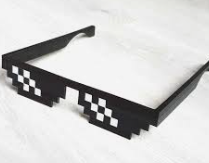

After the Army and before CBSL I filled the gap with working part time in the BP petrol station in Bridgend.
I could only work 3 shifts a week otherwise I wouldn’t be able to collect my dole money too. Majid the owner was a great, part of the deal was that I could fill my petrol tank up whenever I needed too for free. What a generous offer, shame I only had a motorbike, my Suzuki GS400 for those of you following the bike/car timeline, so that was probably a £2 or £3 a week topup.

I don’t know if it was unresolved army anger or just boredom but when I was sitting there behind the counter I always wanted someone to come in and try to demand the takings, I had it all planned out, remotely lock the door so they couldn’t get out and then batter them with whatever came to hand…then drag them out and tie them to the big BP sign out by the road with a nice sign strung around their neck with the word EX-THIEF scrawled on it.

If that happened now I would be a quivering wreck and give them everything without so much as a word lol.
This was a short lived job, probably only a couple of months(maybe six) and then I was off to become second choice for my 28 year career with CBSL as it was called when I joined.